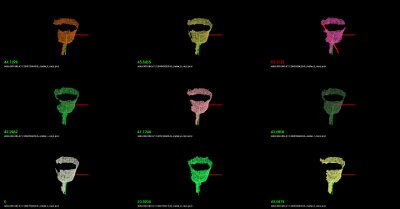
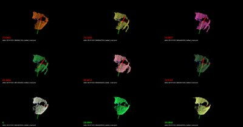

Cluster Recognition and 6DOF Pose Estimation using VFH descriptors¶
As previously described in Estimating VFH signatures for a set of points, Viewpoint Feature Histograms (VFH) are powerful meta-local descriptors, created for the purpose of recognition and pose estimation for clusters of points. We here refer to a cluster as a collection of 3D points, most of the time representing a particular object or part of a scene, obtained through some segmentation or detection mechanisms (please see Euclidean Cluster Extraction for an example).
Our goal here is not to provide an ultimate recognition tool, but rather a mechanism for obtaining candidates that could potentially be the cluster/object that is searched for, together with its 6DOF pose in space. With this in mind, we will be formulating the recognition problem as a nearest neighbor estimation problem. So given a set of training data, we will use efficient nearest neighbor search structures such as kd-trees and return a set of potential candidates with sorted distances to the query object, rather than an absolute “this is the object that we were searching for” kind of response. The reader can imagine that such a system becomes much more useful as we can explicitly reason about failures (false positives, or true negatives).
For the purpose of this tutorial, the application example could be formulated as follows:
Training stage:
given a scene with 1 object that is easily separable as a cluster;
use a ground-truth system to obtain its pose (see the discussion below);
rotate around the object or rotate the object with respect to the camera, and compute a VFH descriptor for each view;
store the views, and build a kd-tree representation.
Testing stage:
given a scene with objects that can be separated as individual clusters, first extract the clusters;
for each cluster, compute a VFH descriptor from the current camera position;
use the VFH descriptor to search for candidates in the trained kd-tree.
We hope the above makes sense. Basically we’re first going to create the set of objects that we try to later on recognize, and then we will use that to obtain valid candidates for objects in the scene.
A good example of a ground-truth system could be a simple rotating pan-tilt unit such as the one in the figure below. Placing an object on the unit, and moving it with some increments in both horizontal and vertical, can result in a perfect ground-truth system for small objects. A cheaper solution could be to use a marker-based system (e.g., checkerboard) and rotate the camera/table manually.
Our Kd-Tree implementation of choice for the purpose of this tutorial is of course, FLANN.
Training¶
We begin the training by assuming that the objects are already separated as individual clusters (see Euclidean Cluster Extraction), as shown in the figure below:


Since we’re only trying to cover the explicit training/testing of VFH signatures in this tutorial, we provide a set of datasets already collected at: vfh_recognition_tutorial_data.tbz. The data is a subset of the objects presented in the figure below (left), and look like the point clouds on the right. We used the pan-tilt table shown above to acquire the data.

Next, copy and paste the following code into your editor and save it as
build_tree.cpp.
In the following paragraphs we will explain what the above code does (or should
do). We’ll begin with the main function.
We begin by loading a set of feature models from a directory given as the first
command line argument (see details for running the example below). The
loadFeatureModels method does nothing but recursively traverse a set of
directories and subdirectories, and loads in all .PCD files it finds. In
loadFeatureModels, we call loadHist, which will attempt to open each
PCD file found, read its header, and check whether it contains a VFH signature
or not. Together with the VFH signature we also store the PCD file name into a
vfh_model pair.
Once all VFH features have been loaded, we convert them to FLANN format, using:
Since we’re lazy, and we want to use this data (and not reload it again by crawling the directory structure in the testing phase), we dump the data to disk:
Finally, we create the KdTree, and save its structure to disk:
Here we will use a LinearIndex, which does a brute-force search using a
Chi-Square distance metric (see [VFH] for more information). For building a
proper kd-tree, comment line 1 and uncomment line 2 in the code snippet above.
The most important difference between a LinearIndex and a KDTreeIndex in FLANN
is that the KDTree will be much faster, while producing approximate nearest
neighbor results, rather than absolute.
So, we’re done with training. To summarize:
we crawled a directory structure, looked at all the .PCD files we found, tested them whether they are VFH signatures and loaded them in memory;
we converted the data into FLANN format and dumped it to disk;
we built a kd-tree structure and dumped it to disk.
Testing¶
In the testing phase, we will illustrate how the system works by randomly loading one of the files used in the training phase (feel free to supply your own file here!), and checking the results of the tree.
Begin by copying and pasting the following code into your editor and save it as
nearest_neighbors.cpp.
The above code snippet is slightly larger, because we also included some visualization routines and some other “eye candy” stuff.
In lines:
we load the first given user histogram (and ignore the rest). Then we proceed
at checking two command line parameters, namely -k which will define how
many nearest neighbors to check and display on screen, and -thresh which
defines a maximum distance metric after which we will start displaying red
lines (i.e., crossing) over the k models found on screen (eye candy!).
In lines:
we load the training data from disk, together with the list of file names that
we previously stored in build_tree.cpp. Then, we read the kd-tree and rebuild the index:
Here we need to make sure that we use the exact distance metric
(ChiSquareDistance in this case), as the one that we used while creating
the tree. The most important part of the code comes here:
Inside nearestKSearch, we first convert the query point to FLANN format:
Followed by obtaining the resultant nearest neighbor indices and distances for the query in:
Lines:
create a PCLVisualizer object, and sets up a set of different viewports (e.g., splits the screen into different chunks), which will be enabled in:
Using the file names representing the models that we previously obtained in
loadFileList, we proceed at loading the model file names using:
For visualization purposes, we demean the point cloud by computing its centroid and then subtracting it:
Finally we check if the distance obtained by nearestKSearch is larger than the user given threshold, and if it is, we display a red line over the cloud that is being rendered in the viewport:
Compiling and running the code¶
Create a new CMakeLists.txt file, and put the following content into it
Note
If you are running this tutorial on Windows, you have to install (HDF5 1.8.7 Shared Library). If CMake is not able to find HDF5, you can manually supply the include directory in HDF5_INCLUDE_DIR variable and the full path of hdf5dll.lib in HDF5_hdf5_LIBRARY variable. Make sure that the needed dlls are in the same folder as the executables.
The above assumes that your two source files (build_tree.cpp and nearest_neighbors.cpp) are stored into the src/ subdirectory.
Then, make sure that the datasets you downloaded (vfh_recognition_tutorial_data.tbz) are unpacked in this directory, thus creating a data/ subdirectory.
After you have made the executable, you can run them like so:
$ ./build/build_tree data/
You should see the following output on screen:
> Loading data/001.324.25 (0 models loaded so far).
> Loading data/800.919.49 (13 models loaded so far).
> Loading data/100.922.16 (27 models loaded so far).
> Loading data/901.125.07 (47 models loaded so far).
> Loading data/000.580.67 (65 models loaded so far).
> Loading data/463.156.00 (81 models loaded so far).
> Loading data/401.431.44 (97 models loaded so far).
> Loading data/100.919.00 (113 models loaded so far).
> Loading data/401.324.52 (134 models loaded so far).
> Loading data/201.327.78 (150 models loaded so far).
> Loading data/300.151.23 (166 models loaded so far).
> Loading data/200.921.07 (180 models loaded so far).
> Loaded 195 VFH models. Creating training data training_data.h5/training_data.list.
Building the kdtree index (kdtree.idx) for 195 elements...
The above crawled the data/ subdirectory, and created a kd-tree with 195 entries. To run the nearest neighbor testing example, you have two options:
Either run the following command manually, and select one of the datasets that we provided as a testing sample, like this:
./build/nearest_neighbors -k 16 -thresh 50 data/000.580.67/1258730231333_cluster_0_nxyz_vfh.pcdOr, if you are on a linux system, you can place the following on a bash script file (e.g.,
test.sh):#!/bin/bash # Example directory containing _vfh.pcd files DATA=data # Inlier distance threshold thresh=50 # Get the closest K nearest neighbors k=16 for i in `find $DATA -type d -name "*"` do echo $i for j in `find $i -type f \( -iname "*cluster*_vfh.pcd" \) | sort -R` do echo $j ./build/nearest_neighbors -k $k -thresh $thresh $j -cam "0.403137,0.868471/0,0,0/-0.0932051,-0.201608,-0.518939/-0.00471487,-0.931831,0.362863/1464,764/6,72" done doneand run the script like this:
bash test.sh
You should see recognition examples like the ones shown below:
 